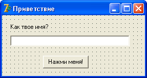

Строки
С этим типом переменных приходится работать довольно часто.
В примере выше мы указывали строку 'Это строка', а в прошлой лекции имели дело со строкой 'Hello, world!'.
Вы уже заметили, что все строки должны быть заключены в одинарные кавычки.
Размер строки практически не ограничен.
Вы можете записать в строку любой текстовый файл, все зависит от того, сколько места есть у Вас на диске, и какой объем ОЗУ у Вас установлен.
Изучать новое удобней сразу на практике, поэтому запускайте Delphi.
Автоматически должен создаться новый проект.
Напишем простенькую программу, в которой поработаем со строкой.
Все компоненты, которые нам для этого понадобятся, находятся на вкладке Standard Палитры компонентов.
Поместите на форму, один под другим, следующие компоненты: Label, Edit и Button.
С Label и Button вы уже знакомы по прошлой программе – Label это простая надпись, а Button – кнопка на форме.
Компонент Edit представляет собой поле для ввода пользователем какого-то значения, какой-то строки.
Растяните компонент Edit, сделав его примерно вдвое длинней.
Выделите компонент Label (одним нажатием мыши!), и в его свойстве Caption вместо "Label1" впишите "Как твое имя?".
Теперь выделите компонент Edit, и удалите "Edit1" из свойства Text, оставив там пустое поле.
Свойство Text этого компонента содержит тот текст, который в данный момент находится в поле ввода.
Вообще, со свойствами компонента можно обращаться, как с переменными.
В большинство свойств можно заносить значения не только в Инспекторе объектов, в момент разработки формы, но и во время выполнения программы.
Выделите кнопку, и в ее свойстве Caption напишите "Нажми меня!".
Для красоты, переместите ее в центр формы.
Измените размер формы, чтобы на ней не было много пустого места.
А также в свойстве Caption формы напишите "Приветствие".
Напомним, чтобы выделить форму, нужно один раз щелкнуть мышью по любому свободному месту формы.
Если вы все сделали правильно, у вас должна получиться такая форма:
Теперь создадим обработчик события для кнопки.
Для этого дважды щелкните по кнопке, которую вы разместили на форме.
Сразу же вы попадаете в Редактор кода, и курсор мигает между строками begin и end.
Begin – это начало процедуры, после него точка с запятой не ставится.
End – конец процедуры, после этого оператора точка с запятой обязательна.
Если вы присмотритесь, то в последней строке редактора кода увидите end с точкой – это конец программы.
Переменные указываются (описываются) перед началом процедуры.
Следовательно, строку begin нужно будет опустить, а перед ней вписать раздел переменных var, и указать переменную s.
Процедура должна выглядеть так:
procedure TForm1.Button1Click(Sender: TObject); var s: String; begin s:= 'Привет, ' + Edit1.Text + '!'; ShowMessage(s); end;
Обратите внимание, что когда вы поставите точку после названия компонента Edit1, выйдет список доступных свойств, методов и событий.
Когда мы впишем первую букву "T", список сортируется – в нем останутся только команды на букву "T", причем Delphi оценивает контекст, и оставляет в списке только те команды, которые в этом контексте могут быть использованы.
В нашем случае, это строка.
Свойство Text, которое останется в списке, может быть использовано в качестве строки:

Теперь нет нужды вводить "Text" самим – это свойство выделено в списке, и нам достаточно нажать <Enter>, чтобы вставить его в код.
На будущее запомните: всегда, когда вы ставите точку после названия компонента, дождитесь такого списка.
Дело не только в том, что так легче вводить код.
Если список так и не появился, значит вы допустили ошибку.
Возможно, в названии компонента, или даже в предыдущей строке.
Теперь сохраните проект в отдельную папку, модуль, как обычно, назовите Main, а проект можете назвать, например, Privet.
После сохранения скомпилируйте его и посмотрите, какое сообщение будет выходить при различных строках, которые введет пользователь в поле ввода Edit1.
Справедливости ради стоит заметить, что в данном примере вовсе необязательно было использовать переменную – мы это сделали лишь в учебных целях.
Такого же эффекта можно было добиться, если использовать выражение
'Привет, ' + Edit1.Text + '!'
прямо в команде ShowMessage:
procedure TForm1.Button1Click(Sender: TObject);
begin
ShowMessage('Привет, ' + Edit1.Text + '!');
end;